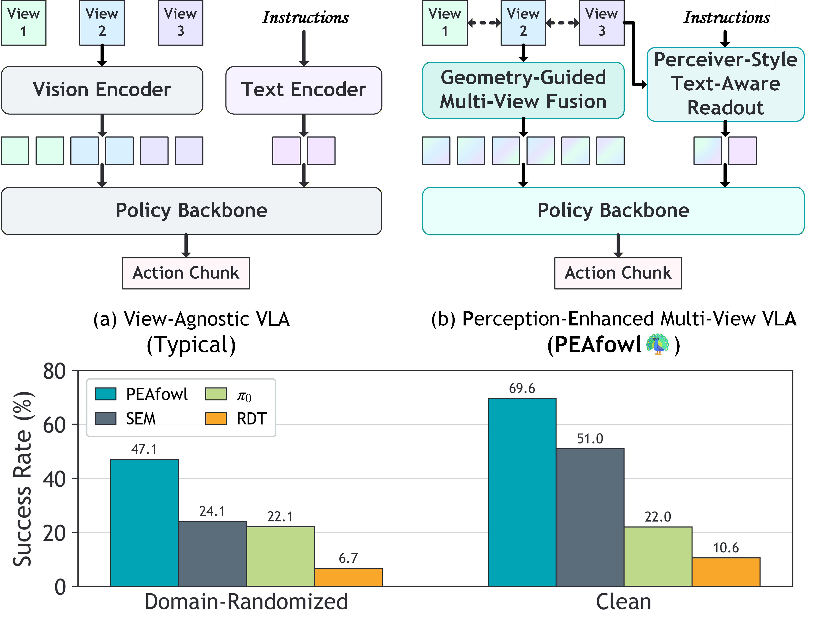

Bimanual manipulation in cluttered scenes requires policies that remain stable under occlusions, viewpoint and scene variations. Existing vision-language-action models often fail to generalize because (i) multi-view features are fused via view-agnostic token concatenation, yielding weak 3D-consistent spatial understanding, and (ii) language is injected as global conditioning, resulting in coarse instruction grounding. In this paper, we introduce PEAfowl, a perception-enhanced multi-view VLA policy for bimanual manipulation. For spatial reasoning, PEAfowl predicts per-token depth distributions, performs differentiable 3D lifting, and aggregates local cross-view neighbors to form geometrically grounded, cross-view consistent representations. For instruction grounding, we propose to replace global conditioning with a Perceiver-style text-aware readout over frozen CLIP visual features, enabling iterative evidence accumulation. To overcome noisy and incomplete commodity depth without adding inference overhead, we apply training-only depth distillation from a pretrained depth teacher to supervise the depth-distribution head, providing perception front-end with geometry-aware priors. On RoboTwin 2.0 under domain-randomized setting, PEAfowl improves the strongest baseline by 23.0 pp in success rate, and real-robot experiments further demonstrate reliable sim-to-real transfer and consistent improvements from depth distillation.

(a) RoboTwin 2.0 simulation (Aloha-AgileX, 4-camera RGB-D) under Clean (top) and Domain-Randomized (bottom) settings. (b) Dual-arm AgileX Piper with a 4-camera rig.
we flatten the multi-view 2D tokens at the same feature level into a set of points, apply t-SNE to reduce the token embeddings to 3D, and then min–max normalize each dimension and map the resulting 3D coordinates directly to RGB channels. This produces a pseudo-colored “token image” for each view, which we use to inspect cross-view consistency.

SEM exhibits stripe-like color patterns that correlate more with image coordinates, with weak color correspondence for the same physical regions across views. PEAfowl (Before Aggregation) already reveals clearer object structures, but still shows cross-view drift. After Cross-View Aggregation, the same objects and regions become more color- and boundary-consistent across views, indicating stronger cross-view, 3D-consistent token alignment.
We visualize the predicted discrete depth distribution per token by first normalizing it into a probability distribution, then computing the expected depth map
E[d] = Σ_d p(d) · bin(d)
using the depth bins, and finally normalizing the expected depth over the bin range and rendering it with a colormap. This allows a direct comparison of depth sharpness and completeness.
SEM is more prone to blurred predictions and missing structures; PEAfowl w/o Depth Distillation already yields cleaner foreground contours; and full PEAfowl further improves boundary sharpness and region completeness, providing more stable geometric cues under noisy and incomplete commodity depth, which implicitly supports more reliable geometry-guided perception and downstream policy learning.